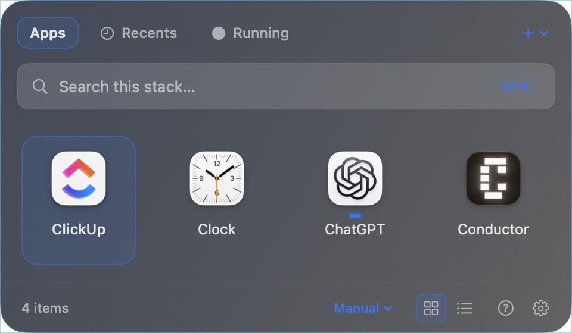
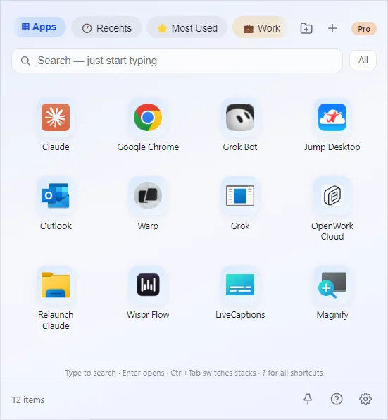
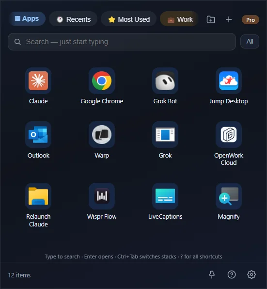

A closer look
Meet your everyday launcher.
Watch the Prism feature film, then explore ClutterDock on Mac and Windows.
The feature film
A little more room to focus.
Real Prism captures, animated for the film. Featuring the proposed CD identity.
Original music · 32 seconds · Download MP4
Read the film transcript
ClutterDock. Less hunting. More doing. Meet Prism for Mac: your everyday tools, together in one place. Press Command–Shift–D to open your launcher. Organize apps, files, folders and links. Type to filter: searching for Clock leaves one matching app. Choose grid or list. Your stacks stay local, with no account required. ClutterDock is free for Mac and Windows at clutterdock.com.



Real app screenshots. Select a platform to explore its appearance.
Prism is the new Mac interface; Windows has its own layout.
Your next tool is one shortcut away.
⌘⇧D on Mac. Ctrl+Shift+D on Windows.
Open a stack, type to filter, and press Return to launch.